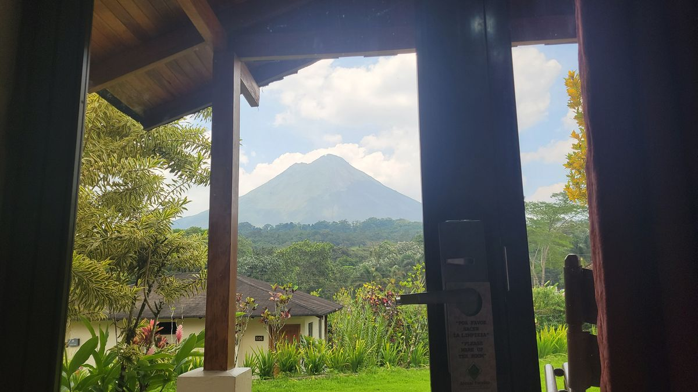
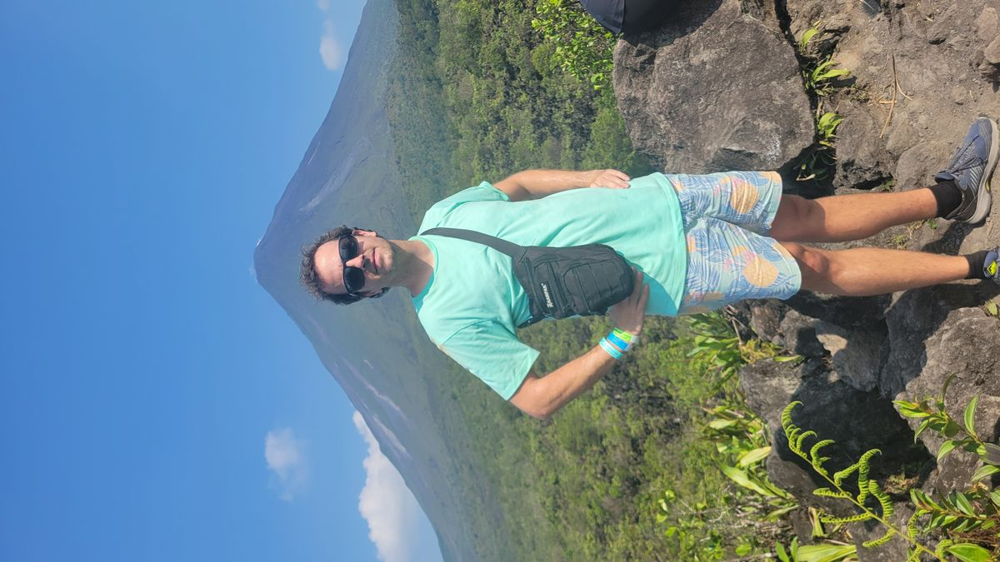

Vulcan Arenal
https://en.wikipedia.org/wiki/StratovolcanoA stratovolcano, also known as a composite volcano, is a conical volcano built up by many layers (strata) of hardened lava and tephra.[1] Unlike shield volcanoes, stratovolcanoes are characterized by a steep profile with a summit crater and periodic intervals of explosive eruptions and effusive eruptions, although some have collapsed summit craters called calderas. The lava flowing from stratovolcanoes typically cools and solidifies before spreading far, due to high viscosity.
The Arenal Volcano in the northwest of Costa Rica is a stratovolcano. It’s probably the most stereotypical looking Volcano I’ve seen on this adventure. If you gave 6-year-old James a pen and told him to draw a volcano it would probably look similar to Arenal (and also have fire breathing dinosaurs or something in the scene also). The main tourist city for Arenal is La Fortuna and hosts a large number of resorts that take advantage of the thermal activity of the area and provide thermal baths and springs for relaxing. The area is densely jungled (except where lava flows have destroyed the native plants) and waterfalls and rivers are abundant.
I only spent a few days there, as with most of Costa Rica, it stretches my daily budget past it limits. I would have to be prudent with my short time here. I opted for a full day tour that would take you to all the main sights La Fortuna had to offer, and although a little rushed would at least let you check those places off your list.

The day started off with a group hike through the jungles to the La Fortuna waterfall. Lunch was provided, then off to the Volcano for an afternoon hike amongst the Lava flows to a view point to hear the history of the volcano from a local guide.


Arenal and Manuel Antonio are probably the two most touristed places in Costa Rica. And for good reasons, they are beautiful and well protected areas that really showcase the best of Costa Rica and Central America.
My time here was short but not unmemorable.